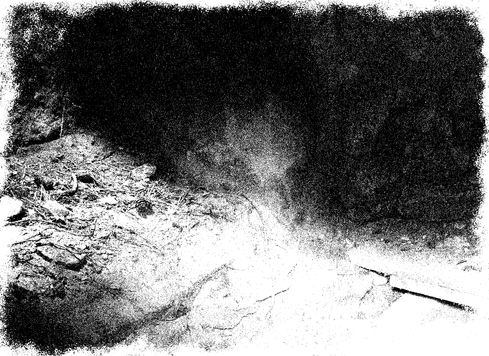

A Zine of Ghost Stories,
Haunting Images and
Occult Practices
Haunting Images and
Occult Practices
1st Edition: Spring 2021

I initally came to this remote place to see Aleister Crowley's old
residence - where he suposedly held a unfinished dark ritual - but now
this little cemetery on the other side of the road was now calling me.
I propped myself up on the broken tombstone leaning against the wall
of the (only) small mausoleum, trying to peak inside through the
broken window. I noticed that the black painted wood of the window
frame was covered in grafiti, from people's names to the iconic "666"
probably left there by another occultism nerd before me, fitting. The
interior did not disapoint: obscure sigils carved onto the stone
mantelpiece, remants of burned out candles on the floor and a hazy
mist emanating from the floor. I quickly snapped this picture without
even checking how it turned out, hopped down my makeshift step and
walked away a little bit faster than I like to admit. I had forgotten
how physical ghosts can be.